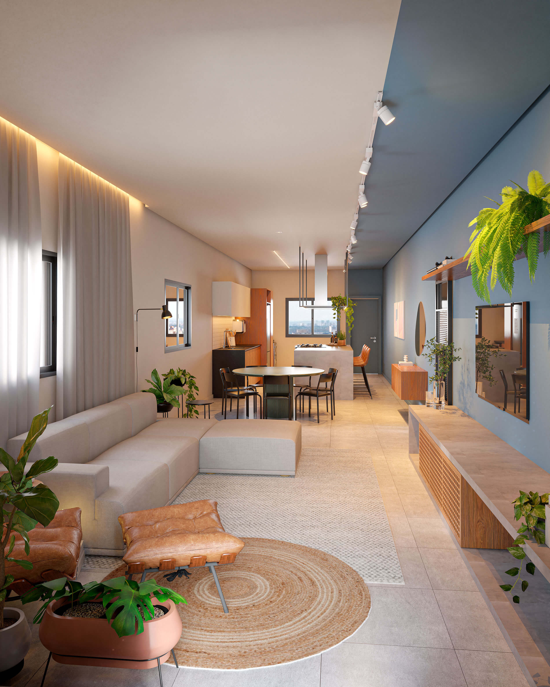

Projeto Casa SR

Projeto Casa CF
Projeto Apê DS
Projeto Casa SR
Projeto Casa CF
Especialista em Psicoarquitetura, Eliza Reis lidera o escritório que leva seu nome e, com um olhar sensível, desenvolve projetos que contam histórias e transformam a conexão entre uma família e seu lar.
Aqui, todos os estilos são apreciados e valorizados, desde o contemporâneo até o clássico, do rústico ao tecnológico, sempre entendendo a personalidade de cada cliente.
Criamos soluções únicas e inovadoras para projetos de arquitetura e interiores residenciais e comerciais que transmitem emoção através de cores, linhas e texturas.